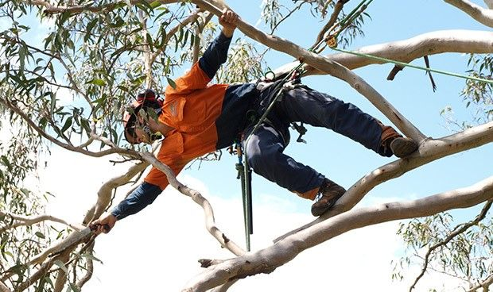
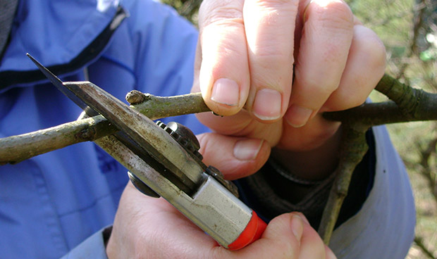

ACT Tree Felling specialise in pruning trees, it is a service we take pride in being able to provide at the highest level.
There are many benefits to pruning a tree correctly and we always prune to the highest industry standards, complying with Australian Standard for pruning of amenity trees (AS4373), ACT Tree Protection Act 2005 and all relevant standards with a full understanding of tree biology and the variance of species characteristics.
Correct pruning can reduce the wind resistance of your trees, lessening the chance of branch failure.
We have experience pruning the some of the largest trees in Canberra, as a preferred provider (of tree services) for the Australian National Botanic Gardens and The Prime Ministers Lodge and can safely prune your large trees to meet your need.
As well as large tree pruning, we regularly pruning small trees such as fruit trees for production, specimen trees or for aesthetic improvement and formative pruning.
Common forms of pruning we undertake are:
Your trees may benefit from pruning if they have:
Pruning can also:

